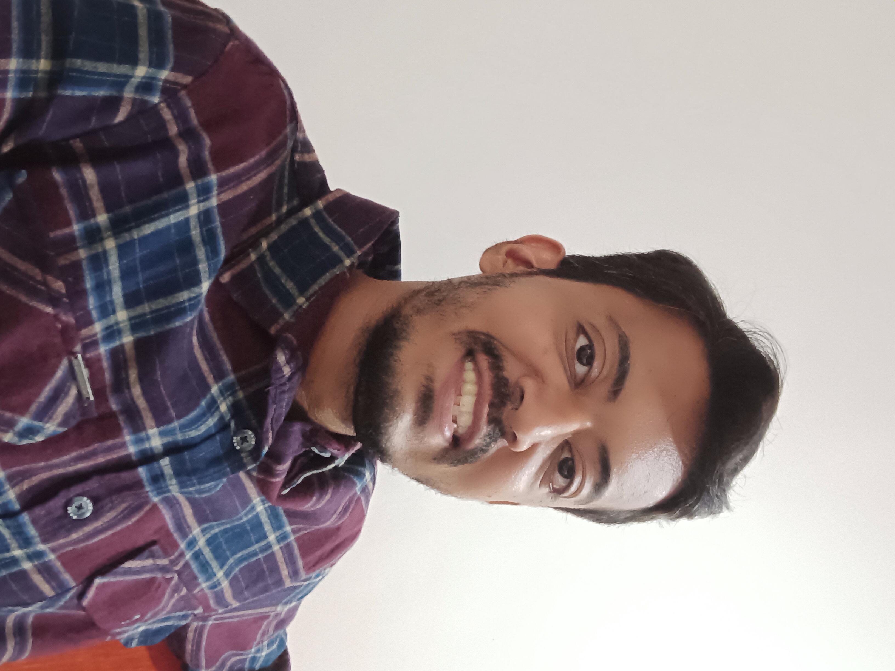

Skills
PHP, MySQL, HTML, Javascript, VSCode, Postman, Git, GitHub
Work Experience
- 1.8 years as a Software Developer at Commversion Solutions Pvt. Ltd (April 2021 – December 2022)
I worked as a junior PHP developer, coding in core PHP and MySQL.
Worked on Instant Connect feature that uses the Twilio API.
Automated weekly reports that were sent out manually
Worked on the Clients Master List along with other tasks.
- 3 years as Lead Maker (back office) at Commversion Solutions Pvt. Ltd (April 2018 – April 2021)
As a lead maker I had to read chat leads, fill the related information in the respective templates and submit them. During this time I got to learn about the lead generation process that was useful when I worked as a software developer here.
-
7 months at Metal Power Analytical (I) pvt.ltd (February 2017 – October 2017) as a Calibration Engineer.
The role involved machine calibration, regular machine maintenance and updating related documents.
- 3 months at Wipro BPO (November 2016 – February 2017) as an Associate for a UK voice process. (British Telecom)
The job involved assisting their customers in troubleshooting internet issues, resetting their email passwords and resolve TV channel related issues.
Educational Details
| Institute |
Qualification |
| Mumbai University |
M.Sc. Degree in Physics with 61.25 % (from 2014–2017) |
| Mumbai University |
B.Sc. Degree in Physics with 52.50% (from 2010 – 2013) |
| Maharashtra State Board |
H.S.C. Examination with 49.33% (2010) |
| Maharashtra State Board |
S.S.C. Examination with 75.84%(2008) |
Kindly post your details and requirements here